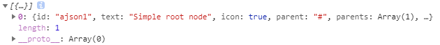

jstree获取当前选中的checkbox和获取选中节点的所有节点
首先初始化一个带有复选框的 jstree
$('#demo_tree').jstree({
"core" : {
'data': [
{ "id" : "ajson1", "parent" : "#", "text" : "Simple root node"},
{ "id" : "ajson2", "parent" : "#", "text" : "Root node 2" },
{ "id" : "ajson3", "parent" : "ajson2", "text" : "Child 1" },
{ "id" : "ajson4", "parent" : "ajson2", "text" : "Child 2" },
]
},
"plugins" : ['checkbox'],
});这时分为两种选中，一个是点击也就是鼠标单击 节点 而不是 checkbox 的选中
var treeNode = $('#demo_tree').jstree(true).get_selected(true); //获取所有选中的节点对象
同理获取 checkbox 的选中
var treeNode = $('#demo_tree').jstree(true).get_checked(true); //获取所有 checkbox 选中的节点对象// id 是选中的节点 id，然后后面的一个参数 true 表示的是不触发默认select_node.change的事件
var id = 'ajson1';
$('#schema_tree').jstree('select_node', id , true);checkbox 同理。